Curry is een gerecht dat komt origineel uit India en bekent staat om het complexe gebruik van kruiden. Curry werd in de 18e eeuw geïntroduceerd aan de Engelse keuken. De Engelse brachten het recept naar Japan in de Meji periode (1868-1916), daar werd het snel in het leger overgenomen omdat het makkelijk is om voor meerdere mensen te maken. De Japanse Curry is een dikke, milde curry, en maakt gebruik van een curry roux in plaats van losse kruiden, dat pas op het laatste wordt toegevoegd. Japanse curry wordt gemaakt in een grote pan met aardappel, ui, wortel en vlees/vis en wordt meestal gegeten met rijst, maar ook weleens met noedels. Curry udon bijvoorbeeld.
| Bereidingstijd | 1 uur 15 min |
|---|
| voor 4 personen |
|---|
| Ingrediënten |
|
1. Pil en snij de uien door de helft, snij de helften in 5 stukken.
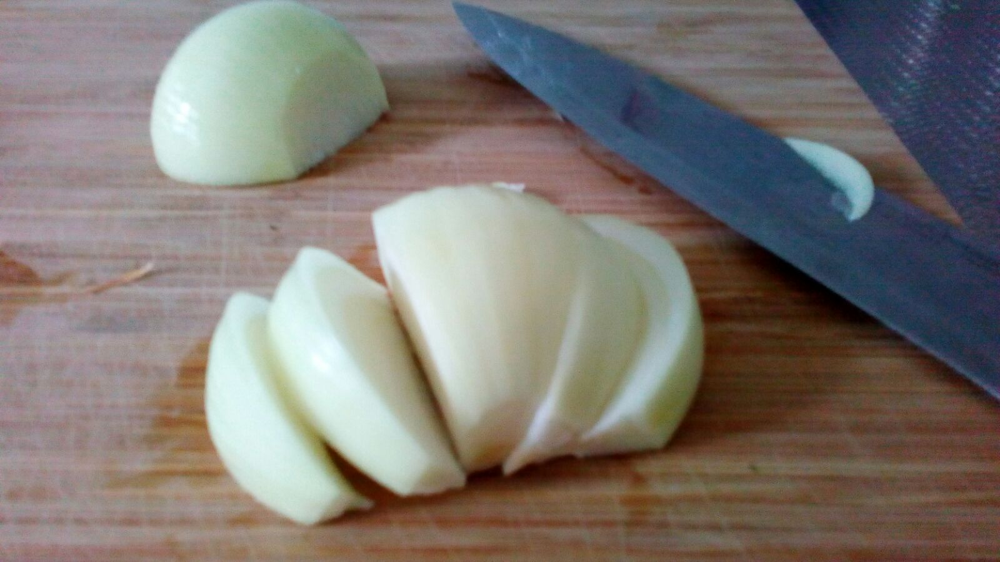2. Scheel de wortel en snij het in kleine stukken, als je het wilt kan je de Japanse manier "Rangiri" gebruiken.(ik had kleine wortels dus heb wat meer dan 1,5 gebruikt)
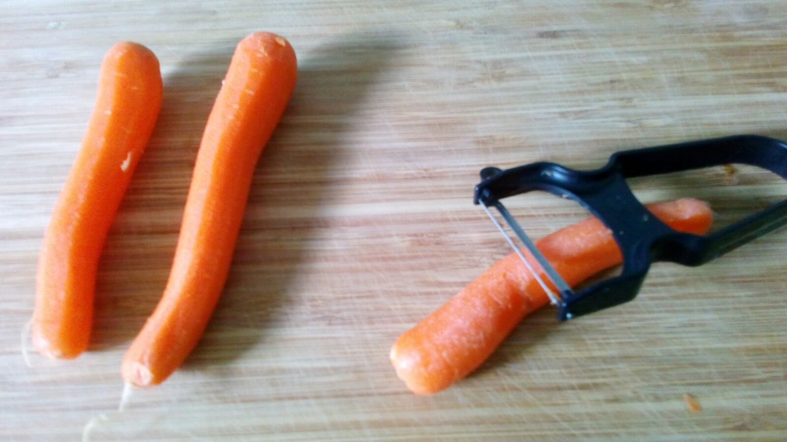3. Scheel de aardappelen en snij ze in vier stukken en zet ze in water om het zetmeel weg te halen. (als ze groot zijn is het misschien handig dat je ze in kleinere stukken snij)
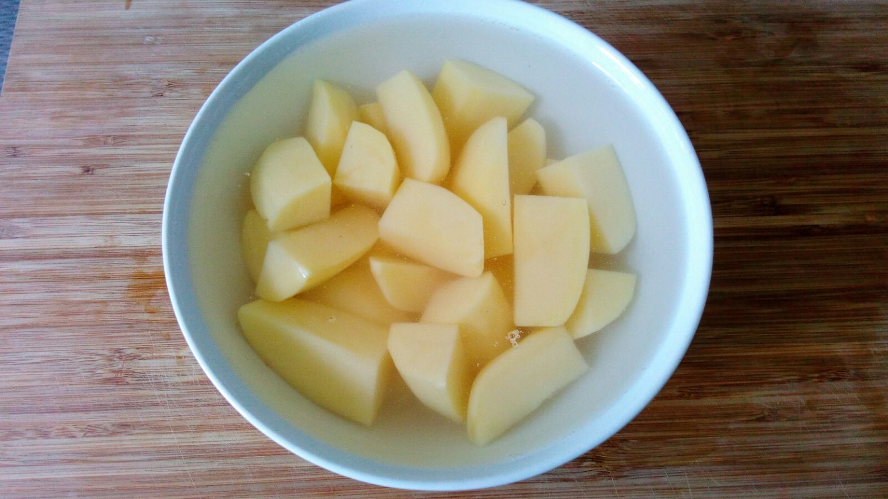4. Snij de knoflook fijn en schaaf de gember.
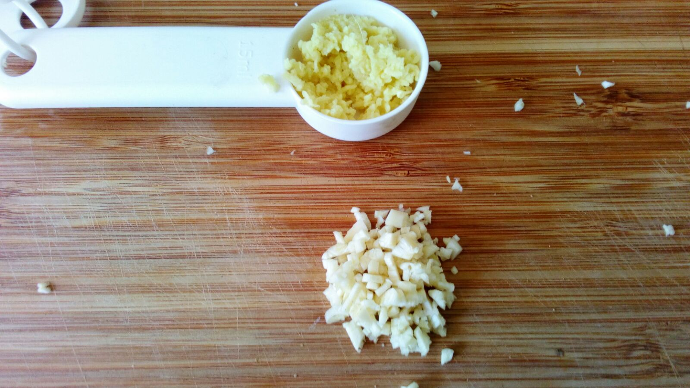5. Snij het vlees in een paar cm grote stukken en breng het op smaak met zout en peper, hier kan je de Japanse manier "Sogigiri" gebruiken.
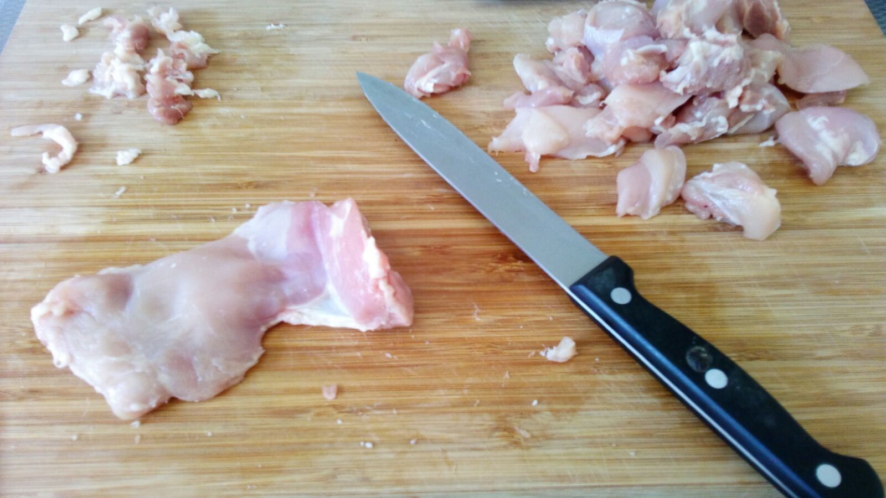 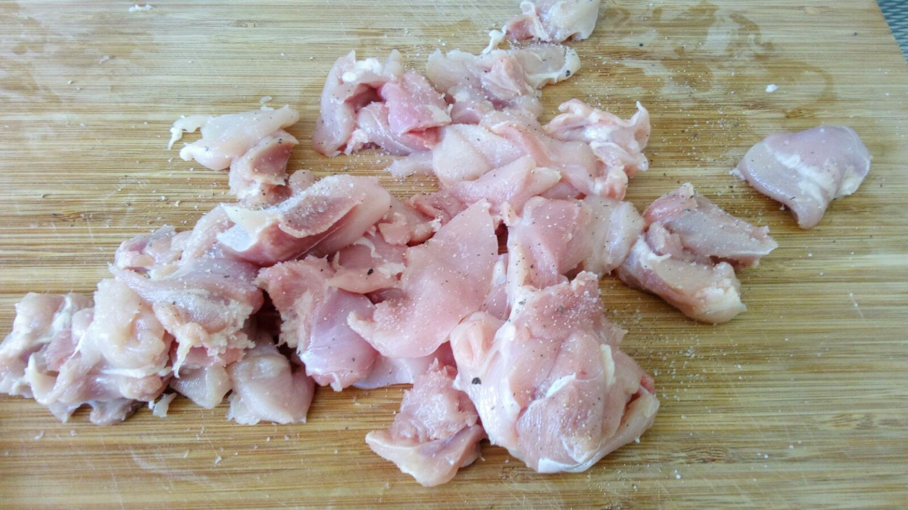6. Voeg 1 scheut olie toe aan een pan op gemiddelde warmte.
vergeten foto van deze stap te maken :(
7. Als de pan warm is voeg de ui toe, laat dat fruiten totdat de ui beetje doorzichtig is, dan voeg knoflook en gember toe.
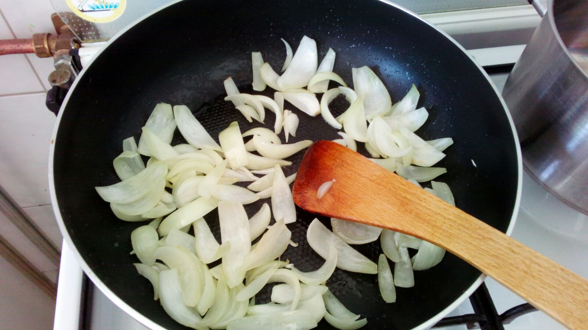 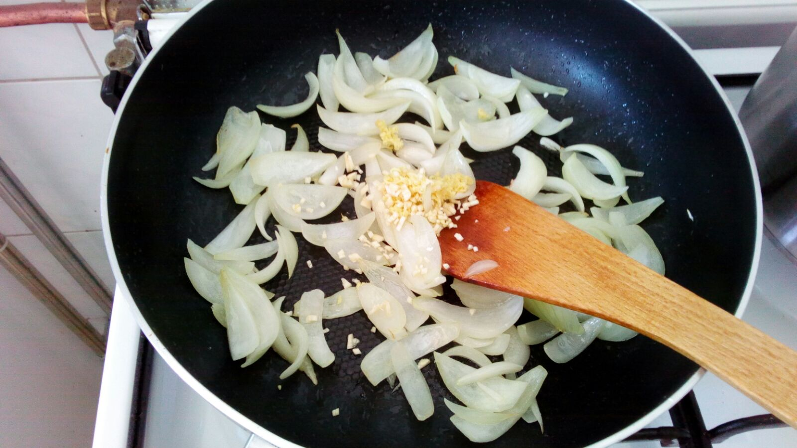8. Voeg de kip toe en nog een scheut olie
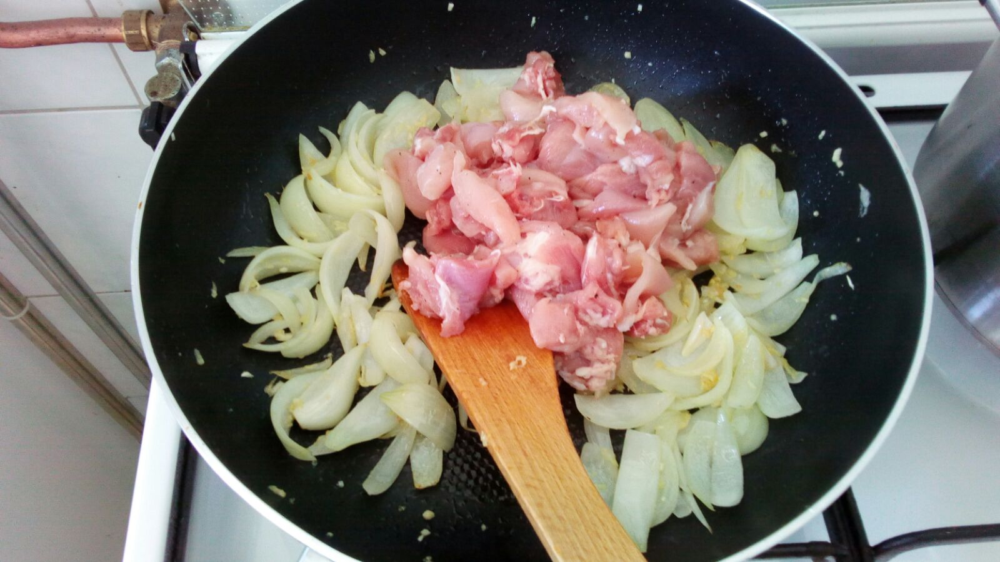9. Wanneer de kip niet meer roze is voeg je wortels en aardappel toe en mix dat goed.
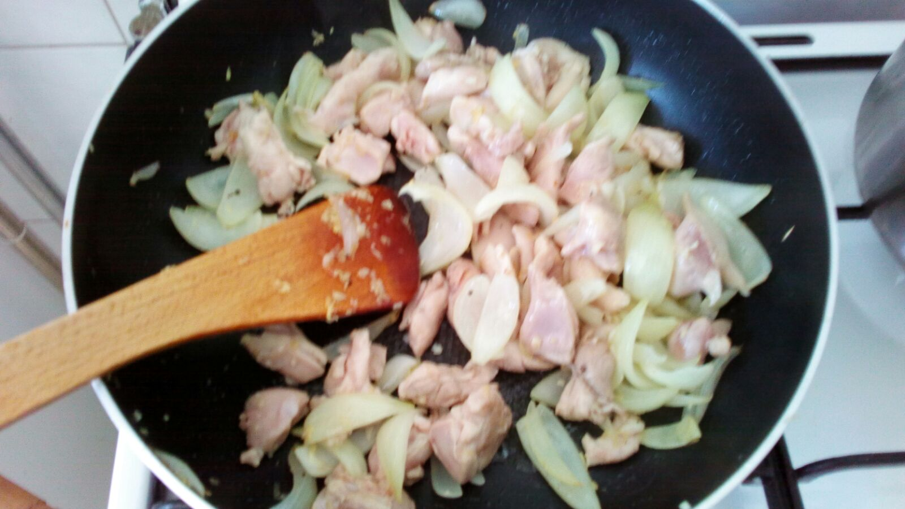 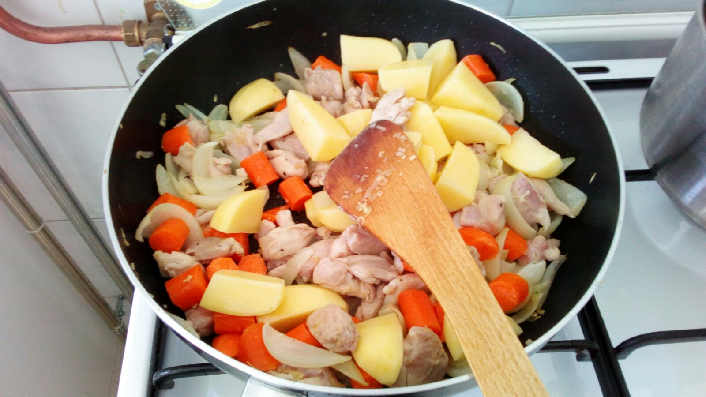10. Voeg de kippenbouillon toe.
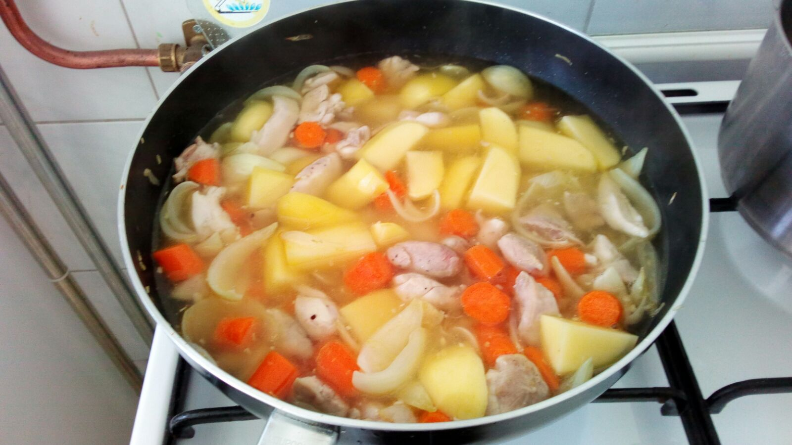11. Als de aarappelen zijn gekookt doe de curry roux en wat bouillon in de pan en laat de roux oplossen.
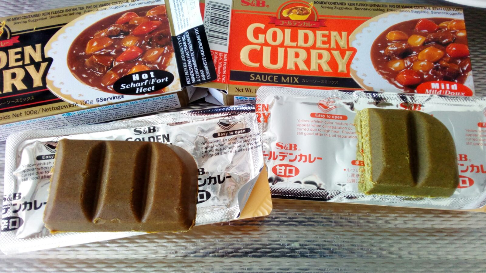12. Laat de curry koken tot dat het dikker wordt.
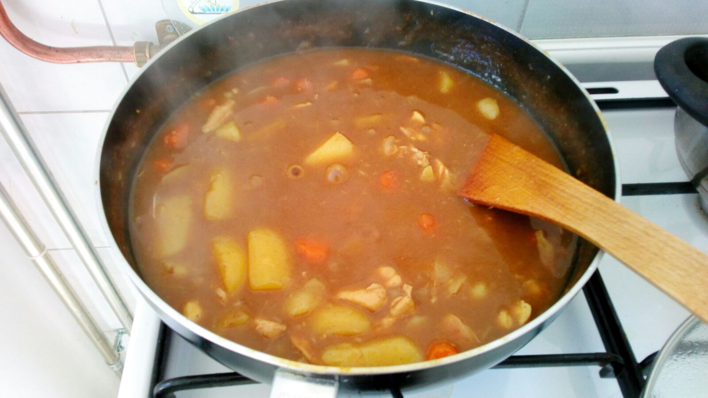Eindresultaat:
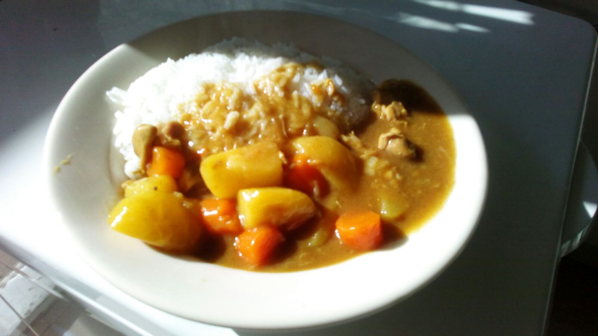Hier heb ik het recept van gehaald, en een beetje aangepast aan hoe ik het thuis maak:
recept